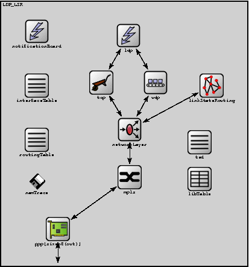
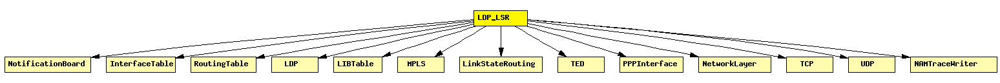

File: Nodes/MPLS/LDP_LSR.ned
An LDP-capable router.
LDP Capable Routers are main building blocks for an LDP MPLS network.
The following diagram shows usage relationships between modules, networks and channels. Unresolved module (and channel) types are missing from the diagram. Click here to see the full picture.
If a module type shows up more than once, that means it has been defined in more than one NED file.
| InterfaceTable | Keeps the table of network interfaces. |
| LDP | Handles and processes LDP messages. |
| LIBTable | Stores the LIB (Label Information Base), accessed by MPLS and its associated control protocols (RSVP, LDP) via direct C++ method calls. |
| LinkStateRouting | This module implements a very minimalistic link state routing protcol. Apart from the basic topology information, the current link usage is distributed to all participants in the network (by means of flooding). |
| MPLS | Implements the MPLS protocol. |
| NAMTraceWriter | When placed inside a host or router, it writes a NAM trace, based on notifications it receives via the NotificationBoard. Expects to find a NAMTrace module named "nam" at network level. |
| NetworkLayer | Network layer of an IP node. |
| NotificationBoard | Using NotificationBoard, modules can now notify each other about "events" such as routing table changes, interface status changes (up/down), interface configuration changes, wireless handovers, changes in the state of the wireless channel, mobile node position changes, etc. |
| PPPInterface | PPP interface. Complements the PPP module with an output queue for QoS and RED support. |
| RoutingTable | Stores the routing table. (Per-interface configuration is stored in InterfaceTable.) |
| TCP | TCP protocol implementation. Supports RFC 793, RFC 1122, RFC 2001. Compatible with both IPv4 and IPv6. |
| TED | Traffic Engineering Database. Stores network topology with detailed link information, including total and reserved bandwidths. |
| UDP |
| Name | Type | Description |
|---|---|---|
| holdTime | numeric | |
| helloInterval | numeric | |
| namid | numeric | |
| peers | string | |
| routerId | string | |
| routingFile | string |
| Name | Direction | Description |
|---|---|---|
| in [ ] | input | |
| out [ ] | output |
| Name | Type | Description |
|---|---|---|
| tcp.mss | numeric const | maximum segment size |
| tcp.advertisedWindow | numeric const | in bytes (Note: normally, NIC queues should be at least this size) |
| tcp.tcpAlgorithmClass | string | TCPTahoe/TCPReno/TCPNoCongestionControl/DumbTCP |
| tcp.sendQueueClass | string | TCPVirtualDataSendQueue/TCPMsgBasedSendQueue |
| tcp.receiveQueueClass | string | TCPVirtualDataRcvQueue/TCPMsgBasedRcvQueue |
| tcp.recordStats | bool | recording seqNum etc. into output vectors on/off |
| networkLayer.proxyARP | bool | |
| networkLayer.ip.procDelay | numeric const | |
| networkLayer.arp.retryTimeout | numeric | number seconds ARP waits between retries to resolve an IP address |
| networkLayer.arp.retryCount | numeric | number of times ARP will attempt to resolve an IP address |
| networkLayer.arp.cacheTimeout | numeric | number seconds unused entries in the cache will time out |
| ppp[*].queueType | string | |
| libTable.conf | xml | table contents to be loaded on startup |
module LDP_LSR parameters: holdTime: numeric, helloInterval: numeric, namid: numeric, peers: string, routerId: string, routingFile: string; gates: in: in[]; out: out[]; submodules: notificationBoard: NotificationBoard; display: "p=70,60;i=block/control"; interfaceTable: InterfaceTable; display: "p=70,150;i=block/table"; routingTable: RoutingTable; parameters: IPForward = true, routerId = routerId, routingFile = routingFile; display: "p=70,240;i=block/table"; ldp: LDP; parameters: holdTime = holdTime, helloInterval = helloInterval; display: "p=222,67;i=block/control"; ted: TED; display: "p=340,244;i=block/table"; linkStateRouting: LinkStateRouting; parameters: peers = peers; display: "p=360,150;i=block/network2"; tcp: TCP; display: "p=177,145;i=block/wheelbarrow"; udp: UDP; display: "p=267,145;i=block/transport"; networkLayer: NetworkLayer; gatesizes: ifIn[sizeof(out)], ifOut[sizeof(out)]; display: "p=224,223;i=block/fork"; ppp: PPPInterface[sizeof(out)]; display: "p=105,388,row,90;q=l2queue;i=block/ifcard"; mpls: MPLS; parameters: //peers = peers, classifier = "ldp"; gatesizes: netwIn[sizeof(out)], netwOut[sizeof(out)], ifIn[sizeof(out)], ifOut[sizeof(out)]; display: "p=224,302;i=block/switch"; libTable: LIBTable; parameters: display: "p=340,305;i=block/table2"; namTrace: NAMTraceWriter; parameters: namid = namid; display: "p=70,310;i=old/floppy1"; connections nocheck: linkStateRouting.to_ip --> networkLayer.OSPFIn; linkStateRouting.from_ip <-- networkLayer.OSPFOut; ldp.tcpIn <-- tcp.to_appl++; ldp.tcpOut --> tcp.from_appl++; ldp.udpOut --> udp.from_app++; ldp.udpIn <-- udp.to_app++; udp.to_ip --> networkLayer.UDPIn; udp.from_ip <-- networkLayer.UDPOut; tcp.to_ip --> networkLayer.TCPIn; tcp.from_ip <-- networkLayer.TCPOut; for i=0..sizeof(out)-1 do in[i] --> ppp[i].physIn; out[i] <-- ppp[i].physOut; ppp[i].netwOut --> mpls.ifIn[i]; ppp[i].netwIn <-- mpls.ifOut[i]; mpls.netwOut[i] --> networkLayer.ifIn[i]; mpls.netwIn[i] <-- networkLayer.ifOut[i]; endfor; endmodule